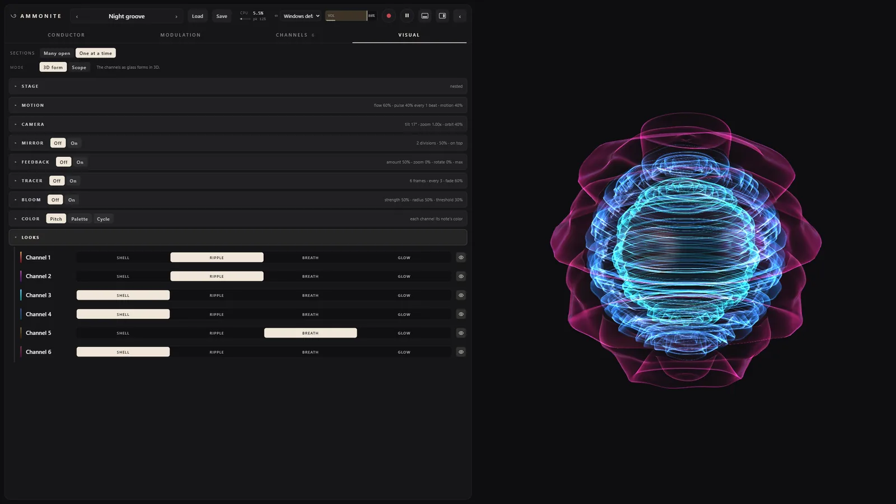
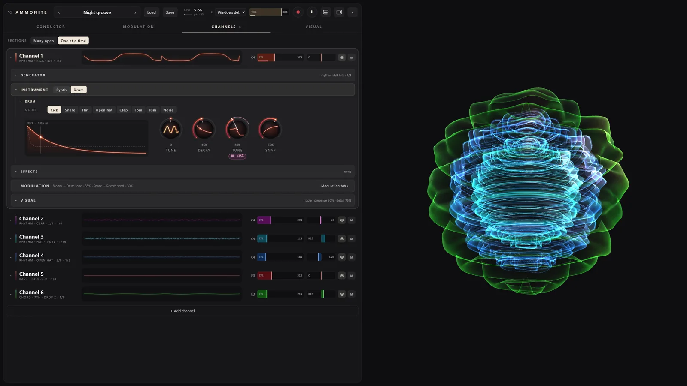
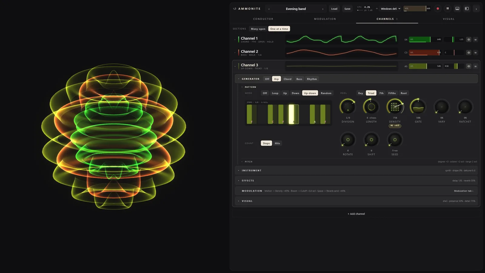
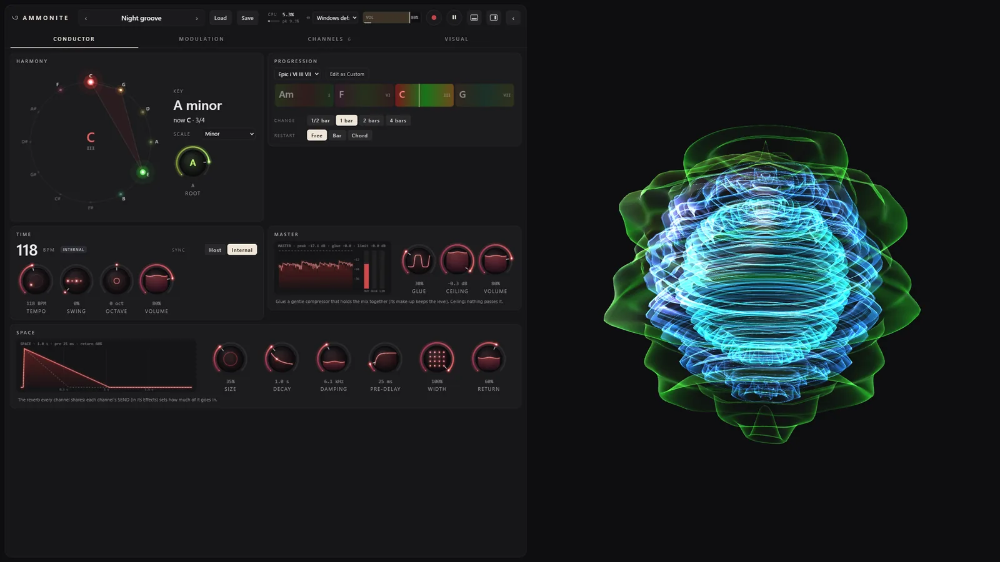
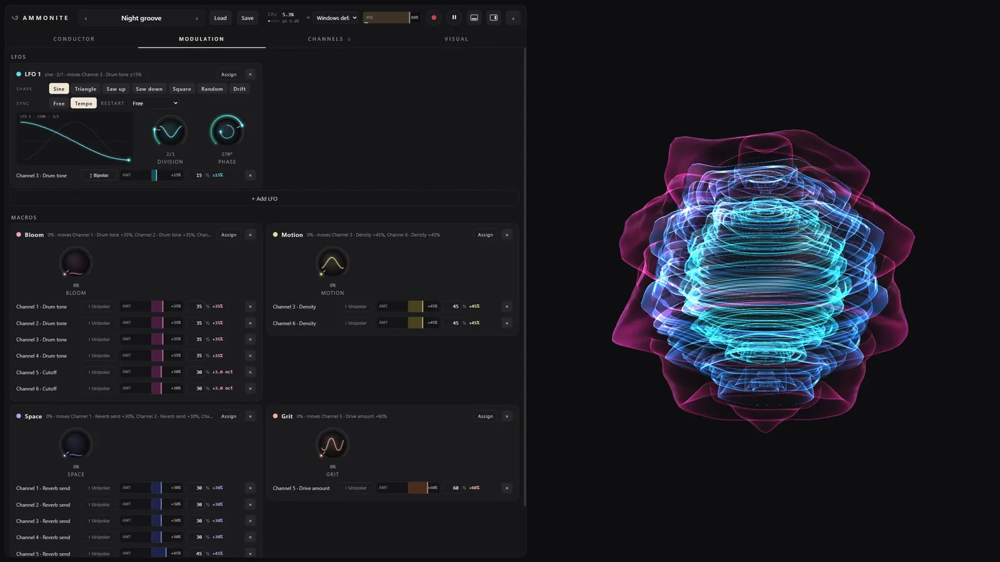

AMMONITE DESKTOP
A generative synthesizer for Windows that plays itself, in key
The stage, recorded from the running app (no sound): Night groove's six channels, each a shell turned from its own waveform, coloured by the note it plays.
Ammonite Desktop 0.1.0
Free, for Windows 10 and 11 (64-bit): a standalone app, a VST3 and a CLAP plugin in one zip.
Download 0.1.0The first release. It is not signed, so Windows will warn you once: how to install it.
What it is
The Ammonite idea, free of the hardware's limits. You choose a key, a chord progression and, for each part, which notes of the chord it may play and in what rhythm; Ammonite plays it. Everything stays in key, and patterns of different lengths drift against each other without ever losing the beat. Where Ammonite-Seed has three voices and twelve knobs, Desktop has room for a whole band.
Up to 16 channels
Each channel is a generator (Arp, Chord, Bass or Rhythm) driving an instrument (a synth voice or a drum), with its own effects, pan and level. Any generator can play any instrument.
Synthesized drums
Kick, snare, hat, open hat, clap, tom, rim and noise, made from scratch, no samples. The Rhythm generator places the hits on the same clock as the harmony, with Euclidean patterns, chance and rolls.
Effects and a mix bus
Drive, chorus and a tempo delay on every channel, a shared reverb with a send from each, ducking from another channel (the kick, say), and a master bus with gentle glue and a limiter.
Modulation and macros
Up to 32 LFOs and 16 macros (Bloom, Motion, Space and Grit to start), routed onto any knob, the stage's visual knobs included. Every route shows on the knob it moves.
The conductor
Key and scale on a circle of fifths, a library of progressions or your own, tempo and swing. In a DAW it follows the host's tempo and transport.
Presets and patches
Ten factory presets, the Seed's recipes among them. Save and open whole patches as
.ammo files, and record the output straight to WAV.
The stage
Half of Ammonite Desktop is something to watch. The stage fills the window and is driven by the real audio of each channel: its waveform, turned around an axis, becomes a glass shell, louder means bigger, and every note brings its colour from the circle of fifths. The controls sit on a glass panel that folds to a slim rail, so the stage can have the whole screen.

Inside




Install
Standalone
Unzip Ammonite-Desktop-0.1.0-win64.zip anywhere, for example into your Documents,
and double-click Ammonite Desktop.exe. It plays through Windows' default output
(choose another in the top bar); the play button or Space starts and stops it.
VST3
Copy the folder VST3\AmmoniteDesktop.vst3 into
C:\Program Files\Common Files\VST3, then rescan plugins in your DAW. Ammonite
Desktop shows up as an instrument by GSNautilus.
CLAP
Copy CLAP\AmmoniteDesktop.clap into
C:\Program Files\Common Files\CLAP (create the folder if it is not there), then
rescan.
“Windows protected your PC”
Ammonite Desktop is not signed with a paid certificate, so the first time you start it, Windows SmartScreen warns about an unrecognized app. Click More info, then Run anyway. Windows remembers the choice.
Patches are saved to Documents\Ammonite\Patches and recordings
to Documents\Ammonite\Recordings.
Requirements
- Windows
- Windows 10 or 11, 64-bit (x64).
- WebView2
- The Microsoft Edge WebView2 Runtime draws the interface. Windows 11 has it, and so do most up-to-date Windows 10 PCs; if the window stays empty, install it from Microsoft (the Evergreen Runtime).
- Graphics
- Any graphics card or integrated graphics that runs WebGL in a browser.
- Plugin hosts
- Any 64-bit DAW that loads VST3 or CLAP instruments.
- MIDI
- None. Ammonite plays itself; there is no MIDI in or out.